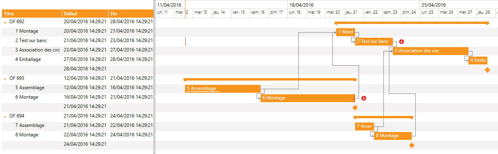
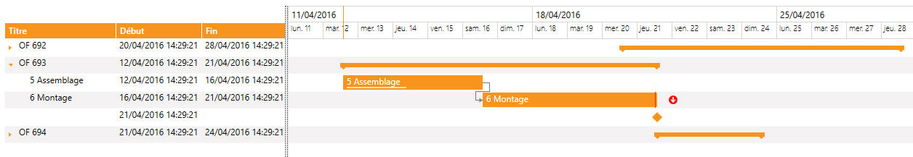

Le concept de "tâche mère" et "tâche fille" permet créer des tâches "jalons" qui "englobent" des tâches.
Cela permet également de replier les jalons dans le tableau de gauche pour avoir une meilleur vision.

Les tâches "OF 692", "OF 693" et "OF 694" sont des tâches "jalons".
A ces tâches ont été ajoutés les différents enfants via la fonction XmeGanttAddChild.
Ces tâches "jalons" peuvent être repliées :

Voir l'exemple de programmation complet.